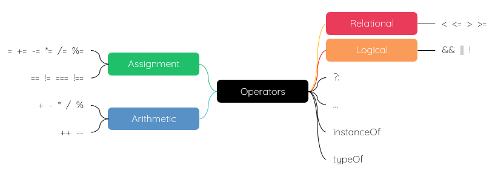

| item | desc |
|---|---|
| = | 赋值 |
| += | 数字的加等 |
| -= | 数字的减等 |
| *= | 数字的乘等 |
| /= | 数字的除等 |
| %= | 数字的取余等 |
| item | desc |
|---|---|
| + | 数字的加法 add
字符串的连接 |
| - | 数字的减法 substract |
| * | 数字的乘法 multiply |
| / | 数字的除法 divide |
| % | 数字取余/ remainder；运算符后面的数字是模 |
| ++ | 自增 |
| -- | 自减 |
console.log(12 + 30);//32
console.log(12 + 'HK');//12HK
console.log("CN" + 'HK');//CNHK
console.log(12 - 30);//-18
console.log(12 * 30);//360
console.log(12 / 30);//0.4 console.log(0 / 0);//NaN console.log(12 / 0);//Infinity console.log(-12 / 0);//-Infinity
console.log(12 % 30);//12 console.log(-12 % 30);//-12
| item | desc |
|---|---|
| < | 小于 |
| > | 大于 |
| ≤ | 小于等于 |
| ≥ | 大于等于 |
| == | 等于 |
| != | 不等于 |
| === | 严格等于 |
| !== | 严格不等于 |
NaN == NaN//false null == null//true
| item | desc |
|---|---|
| && |
逻辑与
也可以写作 AND
|
| || |
逻辑或
也可以写作 OR
|
| ! | 逻辑非 |
res = 1 && 2;//2 res = 0 && 2;//0
res = 1 && 2 && 0 && 12 && 3;//0 res = 0 && 2 && 12 && 23;//0
1 && console.log('hi');//执行打印输出
0 && fn();//不执行函数
res = 1 || 2;//1 res = 0 || 2;//2
res = 1 || 2 || 0 || 12 || 3;//1 res = 0 || 2 || 12 || 23;//2
div.addEventListener('click', (e) => {
let ev = e || window.e;
})
!123//false !!123//true !!NaN//false
console.log(12 instanceof Number);//false
console.log('hi' instanceof String);//false
console.log(true instanceof Boolean);//false
// console.log(null instanceof Null);//warning
// console.log(undefined instanceof Undefined);//warning
console.log(fn instanceof Function);//true
console.log({ name: 'hkc' } instanceof Object);//true
console.log([1, 2] instanceof Array);//true
let fn = num => num * 2;
console.log(typeof 12);//number
console.log(typeof 'hi');//string
console.log(typeof true);//boolean
console.log(typeof null);//object；空对象指针
console.log(typeof undefined);//undefined
console.log(typeof fn);//function
console.log(typeof { name: 'hkc' });//object
console.log(typeof [1, 2]);//object
12 > 18 ? 'yes' : 'no'//no 12 < 18 ? 'yes' : 'no'//yes
let arr = [1, 2, 3, 4, 5] let arr2 = [...arr]